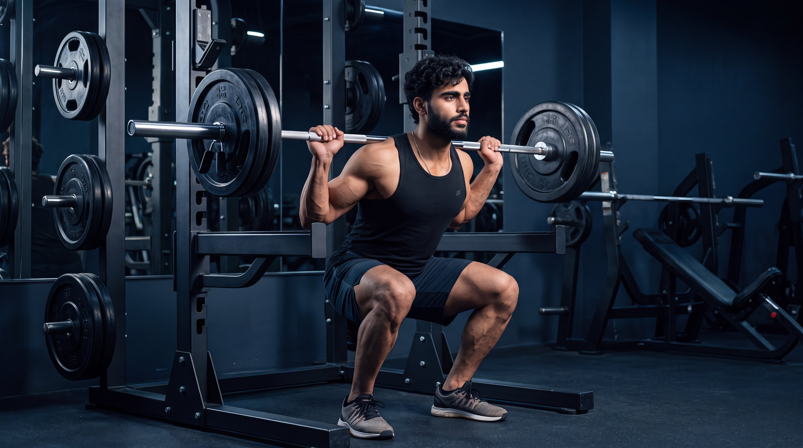
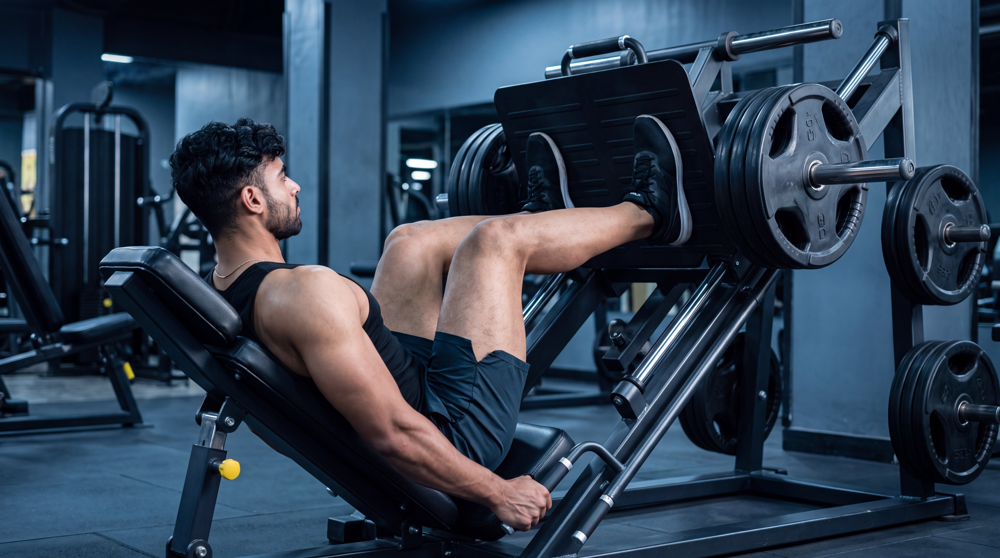
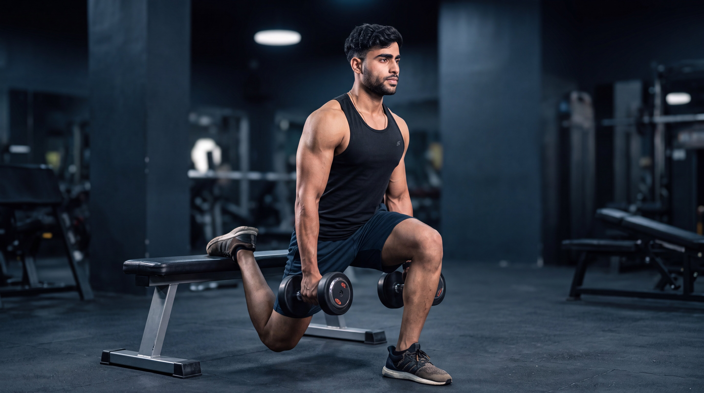
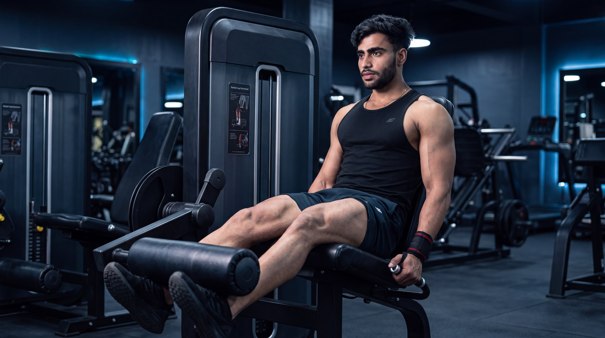
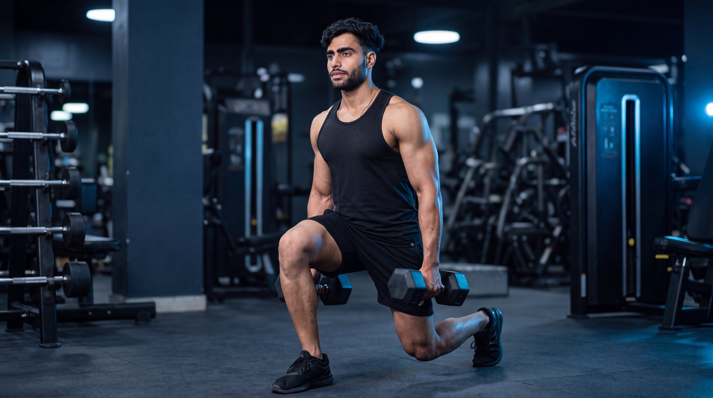
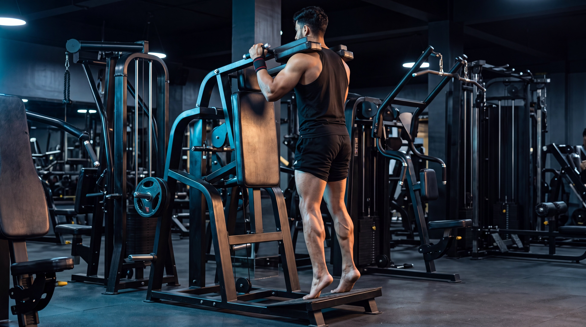
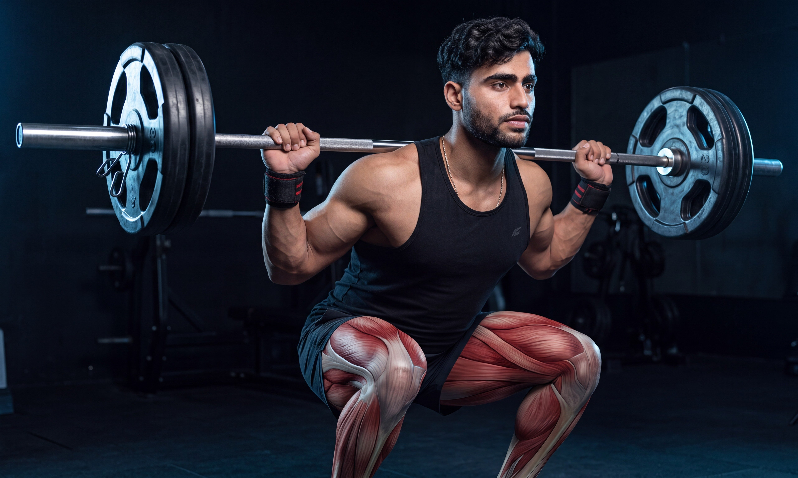
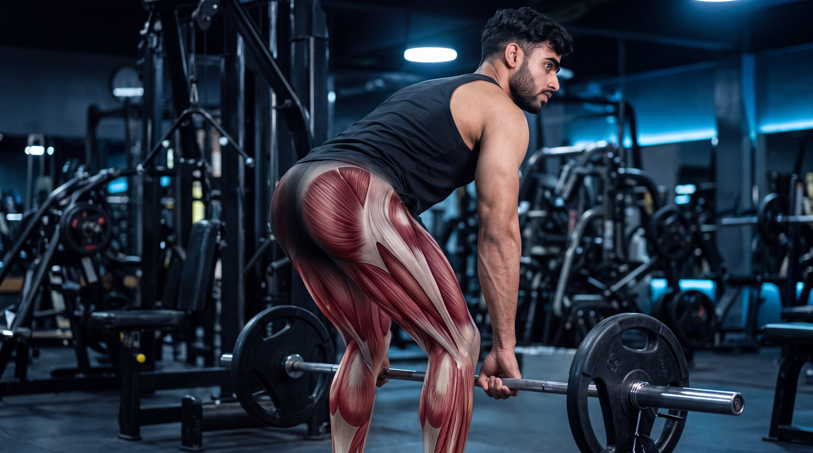
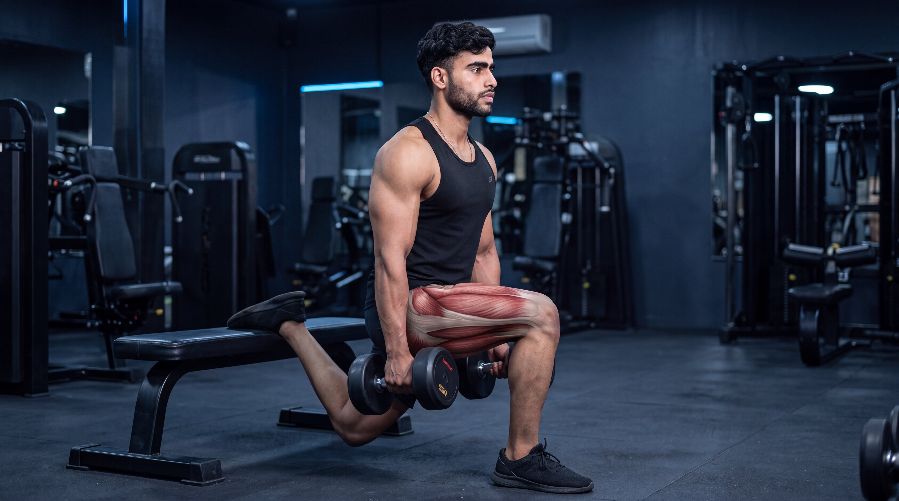
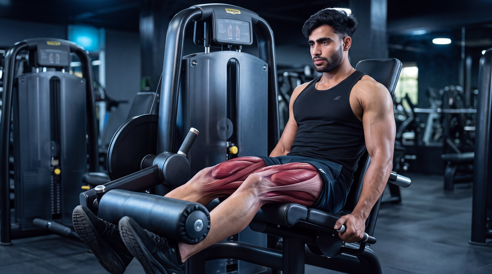

Intermediate
Intermediate
Barbell Back Squat
Build powerful lower-body strength by training the quadriceps, glutes, and supporting muscles through a controlled squat pattern.
View ExerciseExplore step-by-step leg exercise guides designed to help you master proper form, understand muscle activation, avoid common mistakes, and build lower-body strength with confidence.

Explore our leg exercise library and learn proper technique, muscle activation, common mistakes, and practical coaching tips for every lower-body movement.
Intermediate
Build powerful lower-body strength by training the quadriceps, glutes, and supporting muscles through a controlled squat pattern.
View Exercise Intermediate
Intermediate
Develop hamstring and glute strength through a controlled hip-hinge movement while maintaining a stable, neutral spine.
View Exercise
BeginnerBuild lower-body strength with a stable machine-guided pressing movement that challenges the quadriceps and glutes.
View Exercise
IntermediateDevelop unilateral leg strength, stability, and control by training one leg at a time with the rear foot elevated.
View Exercise
BeginnerIsolate the quadriceps through controlled knee extension using a stable machine-guided movement.
View Exercise Beginner
Beginner
Isolate the hamstrings through controlled knee flexion using a stable lying leg curl machine.
View Exercise
IntermediateBuild unilateral lower-body strength, coordination, and stability through controlled alternating forward steps.
View Exercise
BeginnerDevelop calf strength and control through plantar flexion while maintaining stable lower-body positioning.
View ExerciseDifferent leg exercises serve different purposes. Choose your movement based on whether you want to build overall lower-body strength, develop your posterior chain, improve unilateral stability, or target specific muscle groups with greater control.
Focus on compound lower-body movements that train the quadriceps, glutes, and supporting muscles while allowing progressive overload and controlled strength development.
Use hip-hinge and knee-flexion movements to strengthen the hamstrings and glutes while developing a more balanced and powerful lower body.
Train one leg at a time to develop unilateral strength, improve movement control, and challenge lower-body stability through demanding split-stance movements.
Use isolation-focused movements to directly challenge specific lower-body muscles and complement your compound exercises with controlled, targeted training.
Go beyond the surface. Explore cinematic anatomy videos that reveal how your muscles, joints, and movement mechanics work during powerful lower-body exercises.
Watch what happens beneath the skin as the quadriceps, glutes, hamstrings, and lower-body joints coordinate through every phase of the barbell back squat.
See how the quadriceps, glutes, and supporting muscles contribute throughout the repetition.
Understand how the hips, knees, and ankles coordinate as you descend and rise under load.
Connect anatomy with better squat execution, controlled depth, and stable positioning.
Select an exercise to explore its cinematic under-the-skin breakdown.

Hindi
Hindi
Hindi
HindiBuilding stronger legs is not only about lifting heavier weights. Exercise selection, movement quality, balanced muscle development, and consistent progression all shape long-term lower-body strength.
Master the movement first. Then make every repetition stronger, safer, and more purposeful.
Squats, hip hinges, unilateral movements, and isolation exercises challenge the lower body in different ways. Combine these patterns strategically to build complete and balanced leg strength.
Use a comfortable range of motion that allows stable foot pressure, controlled joint positioning, and consistent technique. Never force extra depth at the expense of movement quality.
Progress can come from gradually increasing load, performing more controlled repetitions, improving technique, or using a greater comfortable range of motion while maintaining stable execution.
A balanced leg program should challenge the quadriceps, hamstrings, glutes, and calves through complementary movement patterns rather than relying on a single exercise or muscle group.
Get clear, practical answers to common questions about leg exercises, training frequency, technique, exercise selection, and balanced lower-body development.
For many people, around three to six leg exercises in a workout can be enough, depending on training experience, weekly frequency, exercise selection, and total training volume. Focus on purposeful movements that collectively train the major lower-body muscle groups rather than simply adding more exercises.
Many people train their legs one to three times per week depending on their program, experience, recovery, goals, and total weekly volume. Training the lower body twice per week is a common approach because it allows training volume to be distributed across multiple sessions.
Both can be useful. Free-weight squats develop movement skill, coordination, and lower-body strength, while machines can provide additional stability and make it easier to focus on specific muscles. Beginners should choose exercises they can perform comfortably and consistently with controlled technique.
The knees naturally experience load during squatting, but discomfort may be influenced by factors such as exercise load, stance, movement control, training volume, fatigue, or individual anatomy. Use a comfortable range of motion, maintain controlled technique, and avoid forcing positions that cause pain.
Not necessarily, but they complement each other well. Squat variations generally involve greater knee flexion and strongly challenge the quadriceps and glutes, while Romanian deadlifts emphasize the hip hinge and place substantial demand on the hamstrings and glutes. Your exercise selection should match your goals and overall program.
Compound leg exercises involve the calves to varying degrees, but direct calf training can be useful if calf strength or development is a specific goal. Standing and seated calf raise variations can complement a balanced lower-body program when performed with controlled range of motion.
Training needs vary between individuals. Choose exercises, training volume, and movement ranges that match your experience, goals, recovery, and comfort.
Strength is built through balanced training. Explore more muscle groups, discover new exercises, and keep building your knowledge one movement at a time.